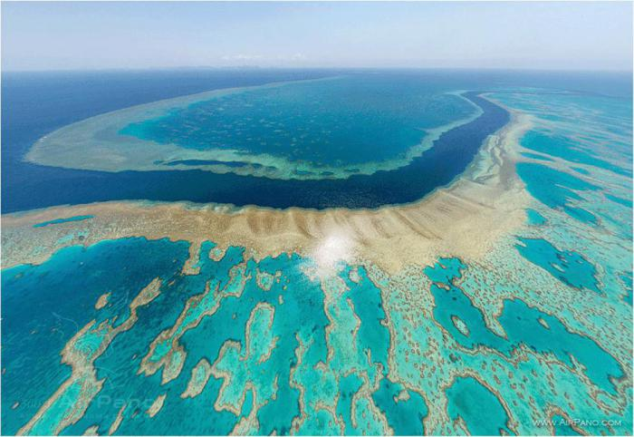
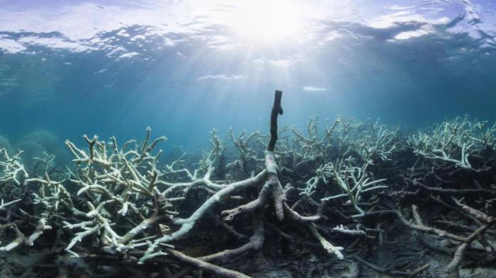

Большой Барьерный риф под угрозой исчезновения
Большой Барьерный риф — самое крупное в мире живое существо — продолжает испытывать массовое обесцвечивание в результате глобального потепления. Ранее позитивно настроенные ученые сегодня быстро теряют надежду на спасение рифа в его сегодняшних размерах.
 Предположение, что в ближайшие десятилетия изменение климата неизбежно негативно скажется на здоровье рифа, сегодня превратилось в уверенность. Все эксперты в один голос призывают сосредоточиться на спасении того, что еще можно спасти, и, пока это возможно, гарантировать, что Большой Барьерный риф не исчезнет полностью. Этот пессимистический поворот событий оказался очень неожиданным. Всего два года назад федеральное и региональное правительство Австралии опубликовали "План Рифа-2050" — долгосрочный детальный план по сохранению и защите коралловых полипов рифа.План был опубликован относительно оптимистично и гласил, что мировое природное достояние не только можно спасти, но и сохранить в лучшем виде для будущих поколений.
Угроза
Однако сегодня, с учетом массового обесцвечивания 2016 года и повторного события в 2017 году, что привело к беспрецедентному повреждению кораллов, некоторые члены комитета, разработавшего "План Рифа-2050", выразили сомнения относительно его выполнимости. На недавнем заседании комитета два эксперта заявили о том, что консервация рифа в его нынешнем состоянии и улучшение его естественных характеристик уже невозможны. Стоит задуматься о сохранении хотя бы части Барьерного рифа.
Причины
По мнению экспертов, непоправимое повреждение рифа из-за глобального потепления неизбежно. Изменение климата тесно связано с обесцвечиванием кораллов, поскольку этот процесс происходит, когда средняя температура воды повышается хотя бы на один градус. Обесцвечивание вызывает быструю гибель полипов. С конца 2014 года температура воды в мировом океане стала регулярно превышать норму, что привело к повреждению кораллов во всем мире, вызвав самое распространенное и самое длительное обесцвечивание в истории научных наблюдений.